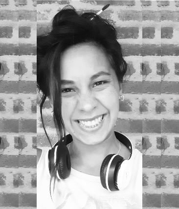

Como diseñadora gráfica freelance, me caracterizo por ser una persona curiosa, creativa y espontánea.
Mi enfoque se basa en comunicar de manera efectiva, utilizando la empatía y la sensibilidad en cada proyecto.
Estoy convencida de que todos poseemos un potencial interno y una contribución consciente que podemos brindar al mundo.